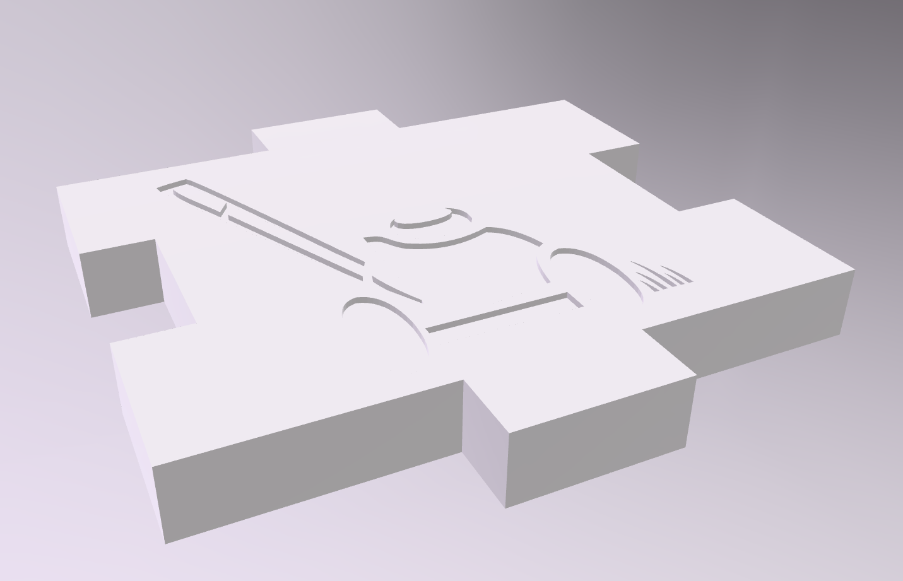

Gada sākumā mums izdalīja tēmas, par kurām mums bija jāuzraksta Word dokuments. Man, piemēram, bija aizsardzība pret sociālo inženieriju. Pārbaudes darbā bija jaizmanto šīs tēmas, lai uztaisītu animāciju par tām.
Skolotāja arī mums iedeva dažādus uzdevumus, kurus izpildīt GIMP aplikācijā stundu laikā, lai labāk izprastu tās funkcijas. Tā es arī iemācījos kā taisīt animācijas GIMPā un arī citas noderīgas darbības, kuras var veikt uz attēliem.
Inkscape
Es izmantoju informāciju, no iepriekš uztaisītā Word dokumenta (par aizsardzību pret sociālo inžnieriju), lai uztaisītu plakātu Inkscape programmā.
Kad mēs bijām izmēģinājuši Inkscape funkcijas ar plakātu veidošanu, skolotāja mums iedeva jaunu uzdevumu, kur mūs sadalīja grupās un mums bija jāuztaisa logo citas grupas uzņēmumam. Tas arī saistījās ar mūsu nākamo datorikas tēmu: 3D puzles veidošanu.
3D puzle un video montēšana
Kad mēs bijām uztaisījuši logo Inkscape aplikācija, katrai grupai bija jāuztaisa 3D kubiņš, kur bija redzams tas logo. Katram grupas dalībniekam bija jāuztaisa savs kuba gabaliņš Tinkercad vietnē un pēc tam mēs tos savienojām un izprintējām. Es iemācijos kā taisīt un printēt 3D modeļus.

3D puzles taisīšanas laikā, mums bija jātaisa video kas parādīja to, kā mēs veicām mūsu uzdevumu. Tēmas beigās mēs katrs uztaisījām video, kur parādījām mūsu 3D puzles veidošanas procesu. Šī uzdevuma veikšanas laikā, es iemācijos, kā apieties ar Clipchamp aplikāciju.
Word
Word programmā mēs veidojām dokumentus un formatējām tekstu.
Excel
Excel programmā mēs veidojām tabulas, izmantojām formulas un veidojām diagrammas.